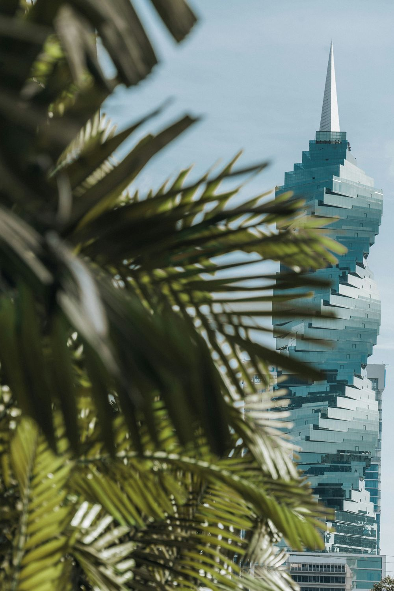
Embarque pela América Latina
Há saídas de Colón ou Cartagena para descobrir o sul do Caribe com o mar como parte da viagem.
Siga pelo mar até as Antilhas e descubra ilhas que parecem feitas para surpreender. Cada parada, uma paisagem. Cada dia, um novo motivo para querer ficar.

Há saídas de Colón ou Cartagena para descobrir o sul do Caribe com o mar como parte da viagem.
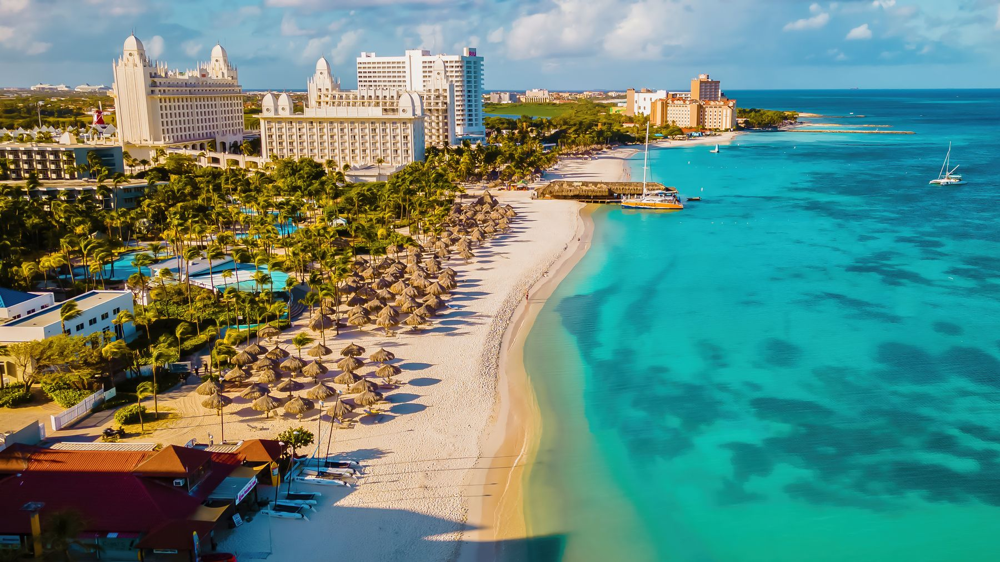
Aruba, Bonaire e Curaçao mostram que o Caribe tem mais de uma cor, mais de um ritmo e muito mais para descobrir.
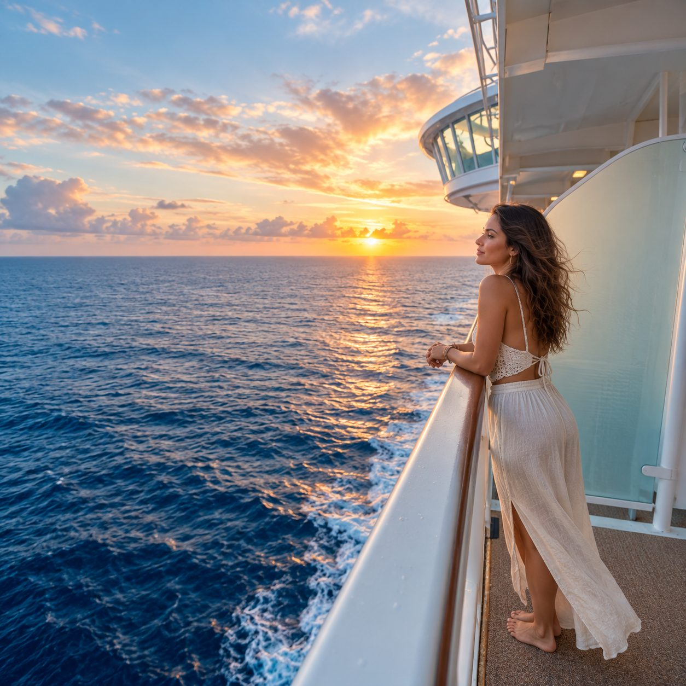
A gente explica o roteiro, orienta sobre a documentação e ajuda você a decidir com clareza.
É em Colón, no litoral caribenho do Panamá, que muitas dessas viagens começam. O porto fica a uma curta viagem de carro da Cidade do Panamá, e o embarque acontece sem passar pelos Estados Unidos.
Quem chega com um dia de folga descobre que a capital vale a parada: as eclusas do Canal, as ruas do Casco Viejo e uma mesa sem pressa antes de subir a bordo. O embarque abre a porta; o Panamá pode virar mais um destino.
Cartagena é a outra porta de entrada e, em algumas saídas, também uma escala. A cidade murada guarda praças, sacadas floridas e fachadas em cores fortes que mudam de tom com a luz do fim do dia.
Entre o centro histórico e o mar, o ritmo é caribenho e colombiano ao mesmo tempo: música na rua, frutas em cada esquina e um pôr do sol que vale ver do alto das muralhas.
Bonaire tem outro ritmo. A água transparente não é só cenário. Sob ela, recifes e peixes tropicais revelam por que a ilha atrai quem gosta de mergulho e snorkel.
Sua costa integra um parque marinho protegido. Mesmo para quem prefere ficar fora d’água, há muito para observar entre a orla de Kralendijk e os vários tons do mar. Bonaire convida a desacelerar para perceber cada detalhe.
Em Aruba, o azul do mar disputa a atenção com a luz da ilha. Eagle Beach convida a estender o dia na areia branca, enquanto Oranjestad traz cor e movimento para além da praia.
E há um lado que surpreende: no Parque Nacional Arikok, a paisagem fica mais árida, rochosa e selvagem. É esse contraste que faz Aruba prender o olhar na chegada e continuar interessante depois da primeira foto.
Em Curaçao, o Caribe também acontece nas ruas. As fachadas coloridas de Willemstad acompanham o porto e contam parte da história de uma cidade reconhecida pela UNESCO.
Pelo litoral, enseadas e praias trazem de volta o azul que se espera do Caribe. Essa combinação de arquitetura, cultura e mar dá à ilha uma personalidade própria e deixa vontade de descobrir o que existe depois da próxima esquina.
Entre uma ilha e outra, o Grandeur of the Seas mostra um jeito mais clássico de navegar com a Royal Caribbean. Encontre seu lugar ao sol, faça uma pausa com vista para o mar, descubra a programação da noite e brinde ao horizonte.
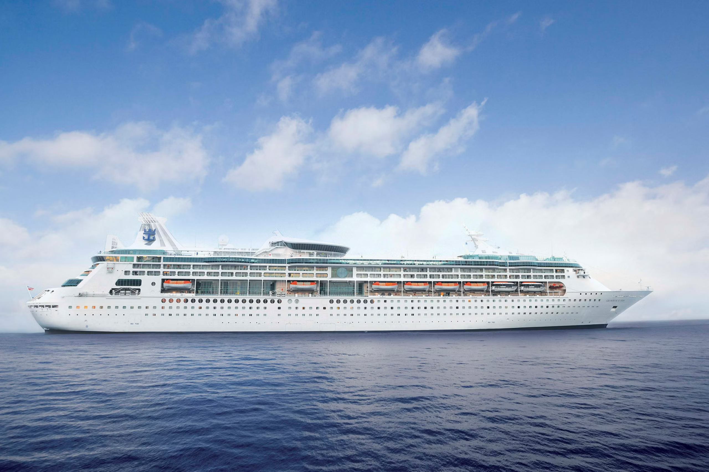
Comece pela piscina, escolha a calma do Solarium ou troque a espreguiçadeira pela parede de escalada. A vista muda, e o ritmo do dia é você quem decide.
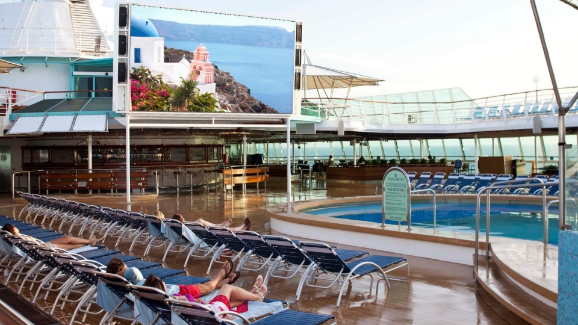
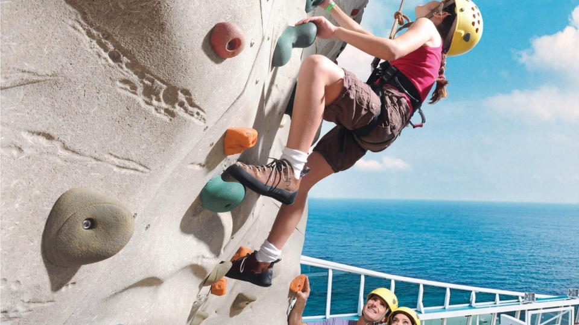
Pacote de bebidas
Em saídas participantes e cabines elegíveis, o pacote de bebidas já vem incluído. Para hóspedes com 18 anos ou mais, o Deluxe reúne coquetéis, cafés e outras bebidas. Para menores, o Refreshment oferece uma seleção sem álcool. Do primeiro café ao brinde da noite, há mais uma maneira de aproveitar o caminho.
Oferta válida em saídas participantes e cabines elegíveis do Grandeur of the Seas. Cabines Garantidas não participam. Confira as condições da opção escolhida.
Voos de cidades brasileiras chegam à Cidade do Panamá. Na costa caribenha do país, Colón abre o caminho marítimo para as Antilhas. É uma rota que faz sentido para o embarque e também revela um lugar que merece tempo na viagem.
Para quem quiser chegar antes ou ficar depois do cruzeiro, o Panamá oferece muito a descobrir: ver o Canal em funcionamento, caminhar pelas ruas do Casco Antiguo e conhecer os sabores de uma capital onde muitas culturas se encontram. A viagem pode começar com uma história panamenha antes mesmo da primeira ilha.
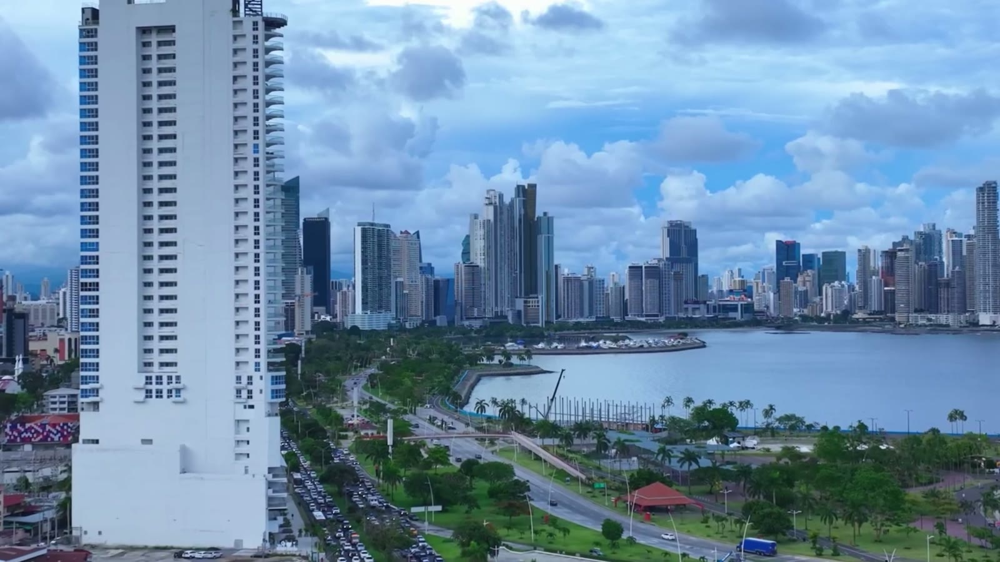
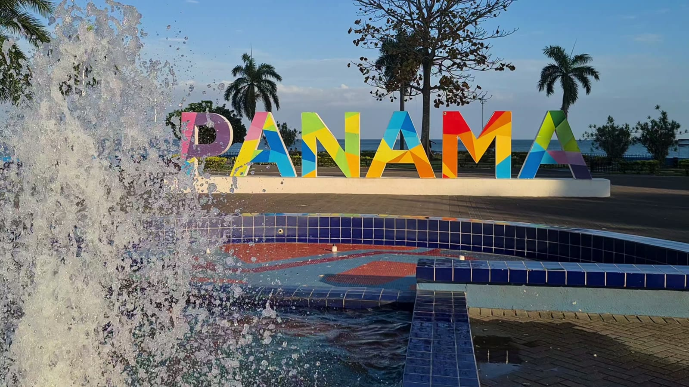
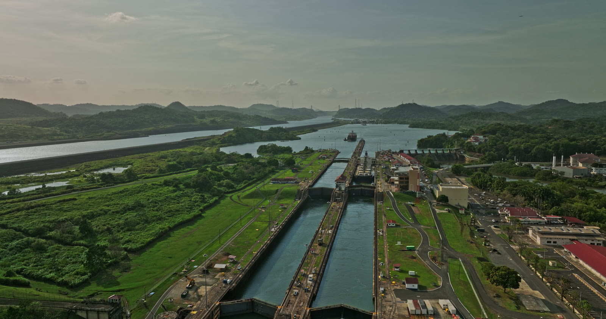
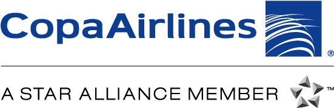
A Copa Airlines opera voos diretos de cidades brasileiras para a Cidade do Panamá, uma opção de chegada para quem embarca em Colón.
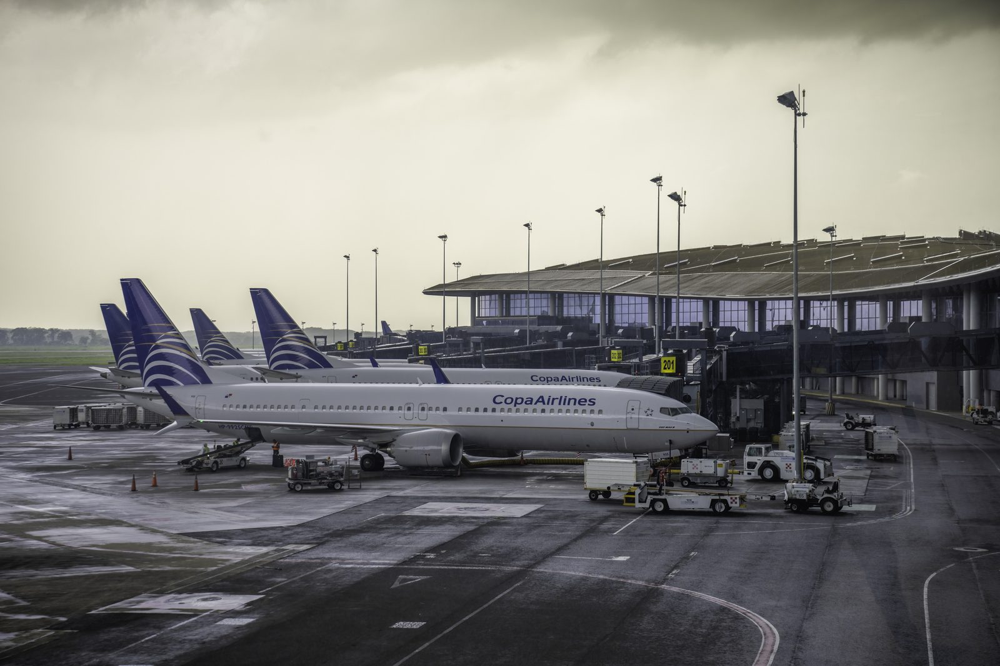
Não, para viajantes brasileiros nessas saídas. O embarque ocorre em Colón ou Cartagena e a viagem não passa pelos Estados Unidos.
Sim. Nesta viagem, o passaporte precisa estar válido por pelo menos seis meses após o término do cruzeiro.
Você chega à Cidade do Panamá e segue até Colón para embarcar. Nas saídas por Cartagena, o embarque acontece na própria cidade.
Sim. Orientamos você sobre os documentos e preparativos da saída escolhida, incluindo passaporte e eventuais exigências de saúde e entrada.
O cruzeiro inclui cabine, refeições principais e programação a bordo. Bebidas, restaurantes especiais, passeios, voos e traslados dependem do pacote. Você vê o que entra na sua opção antes de decidir.
É uma excelente escolha para quem planeja sua primeira viagem internacional de navio, seja em família, a dois ou com amigos. Com embarque pelo Panamá ou pela Colômbia, o roteiro reúne Aruba, Bonaire e Curaçao e permite descobrir o Caribe sem a barreira do visto americano. Entre as ilhas, os dias de navegação também fazem parte da experiência.
Entre a vontade de conhecer as Antilhas e o dia de embarcar, há escolhas importantes. O Cruzeirista explica as opções de roteiro e cabine, esclarece suas dúvidas e ajuda você a decidir com mais tranquilidade.
Analisamos seu perfil para encontrar a melhor data e cabine para você viver este Caribe do seu jeito.
Checklist completo de tudo que você precisa levar, do passaporte às vacinas.
Dicas de passeios, moeda e logística local para você aproveitar cada segundo no Caribe.
Deixe seu contato para conhecer as possibilidades de viagem e tirar suas primeiras dúvidas com o Cruzeirista.
A equipe do Cruzeirista entrará em contato para conversar sobre a viagem.
Não deixe para depois o sonho de navegar pelas águas mais azuis do mundo e viver o Caribe que você sempre imaginou.
Quero falar com um especialista